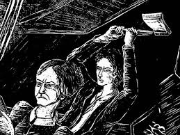

Dostoyevski creció en una familia rusa de clase media. Su padre, médico, fue asesinado por sus propios siervos, un hecho que marcó profundamente su vida. Estudió en la Academia de Ingeniería Militar en San Petersburgo, pero su pasión por la literatura lo llevó a abandonar la carrera militar. En 1849 fue arrestado por participar en un círculo intelectual crítico del zarismo, y fue condenado a muerte. A último momento, la pena fue conmutada por trabajos forzados en Siberia, experiencia que transformó su visión del ser humano y la fe.
Rodion Raskólnikov: El protagonista principal de la novela, un joven estudiante de derecho que vive en la pobreza y se siente alienado de la sociedad. Su creencia de que algunos hombres son "extraordinarios" y tienen el derecho de cometer crímenes para lograr un bien mayor lo lleva a asesinar a una usurera. A lo largo de la novela, se enfrenta a su conciencia, la culpa y el deseo de redención.
Sofía Marmeládov: Una joven desafortunada que, a pesar de su situación, es profundamente religiosa y muestra una gran bondad. Sofía es una figura clave en la vida de Raskólnikov, representando la compasión, la fe y el sacrificio.
Dmitri Razumijin: Amigo cercano de Raskólnikov, quien lo apoya emocionalmente a lo largo de la novela. Razumijin representa la sensatez, el amor incondicional y el compromiso con la moral.
Porfirio Petrovich: El astuto detective encargado de investigar el asesinato. Su enfoque psicológico y su capacidad para leer las emociones y pensamientos de Raskólnikov hacen de él una figura clave en la tensión de la obra.
La novela comienza con Raskólnikov, un joven estudiante de derecho que se encuentra en una profunda crisis existencial y moral. Vive en la miseria en un barrio de San Petersburgo y sufre de una creciente desesperación. Raskólnikov cree que ciertas personas, por su grandeza o capacidad de hacer el bien, tienen el derecho de cometer actos que serían condenados por la moral tradicional. Este pensamiento lo lleva a planificar y ejecutar el asesinato de Alyona Ivanovna, una usurera que vive sola en su departamento. Sin embargo, las cosas no salen como esperaba, y la novela comienza a explorar las consecuencias psicológicas de su crimen.
Tras el asesinato, Raskólnikov experimenta una angustia creciente. A medida que la culpabilidad y el remordimiento lo atormentan, se enfrenta a un profundo conflicto interior. Su mente se ve invadida por la paranoia y la desesperación, mientras trata de ocultar su crimen, aunque las pistas lo acosan. La interacción con otros personajes, como Sofía, quien descubre su sufrimiento y lo insta a buscar la redención a través de la fe, juega un papel crucial en el desarrollo de su carácter. A lo largo de este tramo, Raskólnikov lucha con su sentido de justicia, su concepción de lo "extraordinario" y la relación entre el sufrimiento y la salvación.
El desenlace de Crimen y castigo se produce cuando Raskólnikov, finalmente, se enfrenta a la verdad de sus acciones. A pesar de sus intentos por evadir la culpa, la presión psicológica y emocional lo lleva a confesar el crimen a la policía. Sofía, que sigue siendo un pilar de apoyo, lo acompaña en su viaje hacia la prisión, donde Raskólnikov comienza a experimentar un proceso de transformación espiritual. El castigo físico no es solo una condena judicial, sino una oportunidad para la redención moral y espiritual. El final de la novela sugiere que, aunque la conciencia de Raskólnikov aún está atormentada, el sufrimiento que experimenta lo lleva a un camino hacia la salvación.
La moralidad y la justificación del crimen: A través de Raskólnikov, Dostoyevski explora si el crimen puede justificarse en nombre de un bien mayor. La obra profundiza en los dilemas éticos sobre la responsabilidad y las consecuencias de nuestras acciones.
La culpa y el castigo: La novela pone en primer plano la lucha interna de un hombre que no solo enfrenta el castigo legal, sino también el castigo psicológico. La culpa de Raskólnikov lo consume, y su viaje hacia la redención está marcado por este tormento interno.
La pobreza y la alienación: La situación de pobreza de Raskólnikov, que lo lleva a sentirse ajeno y apartado de la sociedad, es un reflejo de las tensiones sociales y económicas de la Rusia de la época.
La fe y la redención: A lo largo de la novela, Sofía representa la fe cristiana y el sacrificio, elementos esenciales para la redención de Raskólnikov. La obra sugiere que el sufrimiento puede ser un medio para alcanzar la salvación.
Crimen y castigo es una obra profundamente compleja y poderosa que examina las luchas internas de un hombre frente a la moralidad, la justicia y el sufrimiento. La habilidad de Dostoyevski para crear personajes multidimensionales y para abordar temas filosóficos y existenciales de una manera tan penetrante es lo que convierte a esta novela en una obra maestra. La tensión psicológica que experimenta Raskólnikov a lo largo de la historia mantiene al lector cautivo, mientras que el viaje hacia la redención ofrece una reflexión sobre la naturaleza del alma humana.